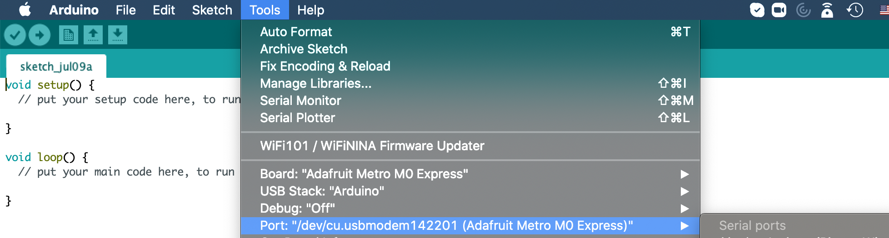
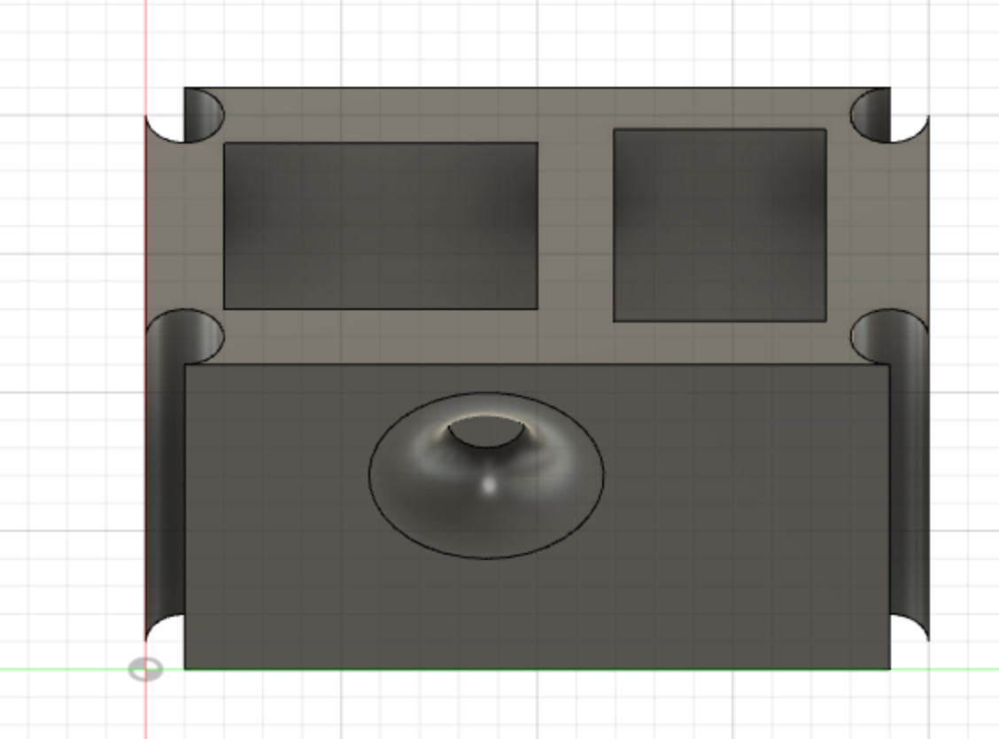

Have you ever wanted to operate your lights without needing to flick the switch? Have you ever visited the Wizarding World of Harry Potter and saw the wands that could operate the different tools and activities? Then my proposal is a fantastic addition to the home! I propose to install sensors near various locations in the house, and then with the flick of a wand, turn on the lights, dim them, etc.
Hi! My name is Andrew Binder, and I am a rising senior at Stuyvesant High School in good old New York City! I have been very interested in physics for many years, and I think learning how to construct models for inventions I think of is a fantastic way to get an even better grasp of physics! Pursuing a course in digital fabrication would help me better understand modeling and designing small inventions that can help move the world in little ways.
I worked with Fusion360 this past week. It is very similar to AutoCad, which is great in my case, as I already have some practice with AutoCad through my drafting class in school. I worked through the first tutorial, which just showed me how all of the basic tools worked, and I got the hang of it fairly quickly afterward. I also was able to practice on a few simple designs, though I waited mostly for the kit to arrive to model some of the tools.
Adjusting to using Fusion360 instead of AutoCad has been more or less smooth, though I have been running in a few problems getting the images to work as well, and I am attempting to catch up as best as I can with those materials!
I have been trying to get everything working, but stuff has certainly not been cooperating with me. Arduino does not want to set up properly, but I do have some ideas on what I want to code my circuit to do. I will keep attempting to get everything to work, and hopefully I can troubleshoot it properly in the coming days!
This was my most recent attempt at working with circuits to create some sort of kinetic sculpture. I have been working on creating a light that turns itself off. This is meant to be more of a gimmick, but the premise is simple: you push a button, activating a light, and as soon as the light is on, a motor will hit the button and turn it off. This is a slight experiment that I plan on using to better understand controls with lights, as the rest of my final project will involve working with lights sending signals, and others sending signals to lights.
Coding in Arduino is an interesting and quite enjoyable, and from what I learned, very similar to other languages like Java and C. Given that I had some experience with coding in C and Java, so transitioning to working with Arduino code was not as bad. However, I did find trouble with working with the Serial commands, but I did learn how to operate buttons, LED's etc.
The biggest issue I ran into whilst creating this wasn't actually coding the buttons and LED's, however; it was actually getting my Arduino to work. I tried restarting Arduino, restarting my computer, switching to the ESP32 board, but alas, nothing happened. I even tried a few different cables to plug into my computer, but they provided no satisfactory results either. In the end, the issue lay exactly with which cable I was using, as I was only able to find cables that provided power without control, and when I found a small cable that also provided control, I was finally able to connect to the right serial port. After all of that hard work, I was finally able to properly communicate to my Arduino board once again. I learned a lot about how different things can affect communication between a computer and the Arduino board, but learned that it's extremely important to distinguish which cables will provide both power and control, and which won't.
Thankfully, 3D modelling didn't give me nearly as much practical trouble. Instead, it gave me a slightly different kind of trouble, as some of the functions were not working with me. Selecting proper bodies and working with the right axes is still annoying, as selecting multiple at once or choosing them in the wrong order can result in errors that will not yield the proper results. After a lot of fiddling and a lot of measuring, I settled on a basic design for the outer hull of one of my proposed final projects: the useless machine. One part will contain the little figurine that will do all of the communicating to the human, and the other will house the Arduino board along with all of the circuitry. I added an impress on the side as an indicator of where the button/switch to activate the thing will be.
I've been thinking a lot about which final project I would be using, but I have been coming up with a few basic designs. I want to keep a lot of my designs really simple, as most of my work will be focused around the programmable hardware. As for the wand idea, the hardware there is already completed, so modelling hasn't been a terrible concern for that regard. As long as I can model exactly the dimensions I need, I would be able to simply stick all of my necessary parts into the spaces, attach the button, and be ready to go with the useless button project idea.